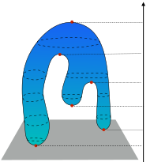
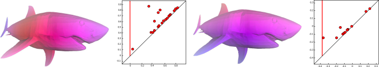
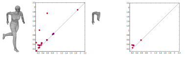

Multicolored persistence
Mattia G. Bergomi, Pietro Vertechi
Champalimaud Research
Outline
- A recap and intuition on (non)-topological persistence
-
Fundamentals of category theory:
- Definition of category, objects, morphisms, universal properties.
- Abelian and semisimple categories.
- Generalizing persistent homology with the language of category theory
-
Multicolored persistent homology:
- Group actions of filtration of spaces
- Labelled datasets
Who else
Massimo Ferri

Antonella Tavaglione

Lorenzo Zuffi

Alessandro Mella
Classical framework
$\mathbb{X}$ triangulable manifold
$f$ continuous.
$\mathbb{X}_{i} = f^{-1}\left(\left(-\infty, a_i\right]\right)$
$\mathbb{X}_{1} \subseteq \cdots \subseteq \mathbb{X}_{n} = \mathbb{X}$

(at least) 4 reasons why
Quantifiable and stable
Flexible
Robust
Limitations
Graphs
Quivers
Labelled point clouds
Aim and the need for generality
Beyond topological persistence
- Graphs and quivers
- $0$ Betti number functions
- Metric spaces, posets
with group action! - All Betti number functions
What is a category?
A category $\mathbf C$ is composed of some objects $\textrm{Obj}(\mathbf C)$ and some morphisms $\textrm{Morph}(\mathbf C)$ between objects: $ A \xrightarrow{\phi} B $
Morphisms need to obey some simple axioms:
- Given $A \xrightarrow{\phi} B \xrightarrow{\psi} C$, we have the composition $A \xrightarrow{\psi \circ \phi} C$.
- Any object $A$ has the identity morphism $A \xrightarrow{Id_A} A$.
Why category theory?
The language of category theory allows to describe
heterogeneous mathematical objects in a uniform way.
Category theory offers a pure theory of functions, not a
theory of functions derived from sets. (D. Scott)
Examples:
$\textbf{FinSet}$ is the category whose objects are
finite sets. Morphisms are functions between sets, with the
usual composition $\circ$.
Other categories: $\textbf{FinVec}_{\mathbb{K}}$,
$\textbf{FinSimp}$.
Functors
A functor is a mapping between two categories that preserves the categorical structure, i.e. objects, morphisms and composition.
Monomorphisms and epimorphisms
- A morphism $A \xrightarrow{\phi} B$ is monic if for all $X \overset{\chi}{\underset{\psi}\rightrightarrows} A$, $\psi\circ\phi = \chi\circ\phi$ implies $\psi = \chi$.
- A morphism $A \xrightarrow{\phi} B$ is epic if for all $B \overset{\chi}{\underset{\psi}\rightrightarrows} X$, $\phi\circ\psi = \phi\circ\chi$ implies $\psi = \chi$.
Universal properties
It is common to define things in terms of so called universal properties. Let's work with the familiar category of sets:
- An object $\varnothing$ is initial if for any $X$ there is a unique morphism $\varnothing \to X$: $\{ \}$
- An object $\textrm{pt}$ is terminal if for any $X$ there is a unique morphism $X \to \textrm{pt}$: $\{0\}$
- Given $A, B$ an object is the product $A \times B$ if a morphism $X \to A\times B$ is the same as a morphism $X \to A$ and a morphism $X \to B$: Cartesian product.
- Given $A, B$ an object is the coproduct $A \amalg B$ if a morphism $A\amalg B \to X$ is the same as a morphism $A \to X$ and a morphism $B \to X$: disjoint union.
Universal properties
It is common to define things in terms of so called
universal properties. Let's work with the familiar
category of sets vector spaces:
- An object $\varnothing$ is initial if for any $X$ there is a unique morphism $\varnothing \to X$: $0$
- An object $\textrm{pt}$ is terminal if for any $X$ there is a unique morphism $X \to \textrm{pt}$: $0$
- Given $A, B$ an object is the product $A \times B$ if a morphism $X \to A\times B$ is the same as a morphism $X \to A$ and a morphism $X \to B$: direct sum.
- Given $A, B$ an object is the coproduct $A \amalg B$ if a morphism $A\amalg B \to X$ is the same as a morphism $A \to X$ and a morphism $B \to X$: direct sum.
The story so far
Topological flavor
$\mathbb{X}_1\subseteq\dots\subseteq\mathbb{X}_n$
We associate to each $\mathbb{X}_i$ the dimension of the image
of a map between vector spaces, e.g.,
$\beta_k(\mathbb{X}_i,\mathbb{K}) =$
$=\textrm{dim}Z_k(\mathbb{X}_i,\mathbb{K}) - \textrm{dim}B_k(\mathbb{X}_i,\mathbb{K})$
Set-based approach
Let $(\mathbf{C},\mathcal{U})$ be a concrete category.
We define axioms that enable to transition back and forth between
subobjects of $X\in\textrm{Obj}(\mathbf{C})$ and subsets of
$\mathcal{U}(X)$.
$\beta^*_0(X_i) = |Z_0(X_i)| - |B_0(X_i)|$
Starting from beyond
A coherent sampling ${\mathcal V}$ on $(\mathbf{C}, {\mathcal U})$ is the assignment to each $X\in \textrm{Obj}(\mathbf{C})$ of a set ${\mathcal V}(X)$ of subsets of ${\mathcal U}(X)$, such that
- ${\mathcal V}(X)$ is a finite (possibly empty) set of elements of ${\mathcal U}(\mathbf{C}_X)$;
- if $X_1 \subseteq X_2$, each element of ${\mathcal V}(X_1)$ is contained in only one element of ${\mathcal V}(X_2)$.
Example: Clique communities
Coherent samplings require restricting the source category to accept only monic morphisms, restricting to functors $\mathbf{FinGraph}_{monic}\to\mathbf{FinSet}$.
Starting from beyond
Given any of its objects $X$, let $F: 2^{{\mathcal U}(X)} \to \{true, false\}$ be any feature such that $F(\emptyset)= false$. We call $F$-set any set $A\subseteq {\mathcal U}(X)$ such that $F(A) = true$.
Example: Hubs detection
Hubs in Game of Throne (books I-V)
Characters co-occurence
Regular categories
In a regular category $\mathbf{R}$, every morphism $X\xrightarrow{\phi}Y$ can be factored in $X\twoheadrightarrow Z\hookrightarrow Y$, such that $\phi=\mu\circ\epsilon$, $\epsilon:X\twoheadrightarrow Z$ is a regular epimorphism (quotient), and $\mu:Z\hookrightarrow Y$ is a monomorphism. This allows us to define naturally the notion of image.
Examples: $\mathbf{Set}$, $\mathbf{Group}$, $\mathbf{RMod}$, $\mathbf{Ring}$.
Intuition:
Let $X, Y$ be sets, and $f:X\rightarrow Y$.
Consider
$$X \times_Y X = \left\{(x_1,x_2)\in X\times X \textrm{ s.t. } f(x_1)=f(x_2) \right\}$$
Consider $p_1: X \times_Y X \rightarrow X$ and $p_2: X \times_Y X \rightarrow X$, then
$$X\twoheadrightarrow X / (p_1\sim p_2) \hookrightarrow Y$$
where the injection is defined as $i(\overline{x}) = f(x)$, for any $\overline{x}\in X / (p_1\sim p_2)$.
Abelian categories
An Abelian category $\mathbf{C}$ has zero object, biproducts, every
morphism has kernel and cokernel, each monomorphism is a kernel
and each epimorphism is a cokernel.
Any Abelian category is regular.
Example:
The category $\textbf{Mod}_R$ of modules on a ring is
Abelian.
1. The zero object is the $0$-module (the trivial group equipped with
the trivial $R$ action).
2. $\textbf{Mod}_R$ has kernels and cokernels. Let $f: N_1\rightarrow N_2$,
then $ker(f) =\{x | f(x)=0\}$, and $coker(f)=N_2/Im(f)$.
3. A homomorphism $f: N_1\rightarrow N_2$ is a monomorphism (epimorphism)
only if it is an injection (surjection).
Like Vec
Length as a notion of dimension
$$0 \simeq X_0 \hookrightarrow X_1 \hookrightarrow \dots
\hookrightarrow X_n \simeq X$$ where all $X_{i+1}/X_i$ are simple.
Unlike Vec
No notion of basis
Semisimple categories
Simple object: Let $\mathbf{C}$ be an Abelian category. $X\in Obj(\mathbf{C})$ is simple if its only subobjects are $0$ and $X$.
Lemma (Schur lemma) Given $S, S^\prime$ simple objects in an Abelian category, morphisms from $S$ to $S^\prime$ are either zero or invertible.
An Abelian category is semisimple if all its objects are semisimple, i.e. each object can be written as a finite sum of simple objects.
Example: (Maschke's theorem) The category of representations of a finite group $G$ over a field of characteristic not dividing $|G|$ (or $0$) is semisimple.
Like Vec
Exact sequences split, i.e. any exact sequence is isomorphic to
$$0\rightarrow X \rightarrow X\oplus Y\rightarrow Y\rightarrow 0$$
Unlike Vec
More than one simple objects.
The fundamental ingredients of persistence
Persistent homology requires a few basic ingredients:
- A filtration $X_t$ in the category $\mathbf{Top}$.
- A functor $H_k:\mathbf{Top} \to \mathbf{Vec}$ (the homology in some degree).
- A notion of size in the category $\mathbf{Vec}$ (the dimension of the vector space).
The recipe
- Start with a filtration of topological spaces $X_t$.
- Obtain vector spaces $H_k(X_t)$ with linear maps $H_k(X_s) \to H_k(X_t)$ for $s \le t$.
- Consider the persistent homology spaces $im(H_k(X_s) \to H_k(X_t))$.
- Compute the the persistent Betti numbers $dim(im(H_k(X_s) \to H_k(X_t))$.
Examples of fiber-wise rank functions
- Cardinality in $\mathbf{FinSet}$
- Dimension in $\mathbf{FinVec}_\mathbb{K}$
- In an Abelian category, length (with finiteness assumptions)
- Any non-negative "exact" function in an Abelian category, i.e. such that $r(0) = 0$ and for all short exact sequence $X \to Y \to Z$, $r(Y) = r(X) + r(Z)$
Categorical persistence function
Properties of persistent Betti numbers
Given $u_1\le u_2 \le v_1 \le v_2$:
- $p(u_1, v_1) \le p(u_2, v_1)$ and $p(u_2, v_2) \le p(u_2, v_1)$
- $p(u_2, v_1) - p(u_1, v_1) \ge p(u_2, v_2) - p(u_1, v_2)$
Definition (Categorical persistence function). $p:\textrm{Morph}(\mathbf C) \to \mathbb Z$ such that, given $u_1\to u_2 \to v_1 \to v_2$:
- $p(u_1 \to v_1) \le p(u_2 \to v_1)$ and $p(u_2 \to v_2) \le p(u_2 \to v_1)$
- $p(u_2 \to v_1) - p(u_1 \to v_1) \ge p(u_2 \to v_2) - p(u_1 \to v_2)$
We recover the original definition when $\mathbf C = (\mathbb R, \le)$.
Categorical persistence function
From a rank
Given a rank $r:\textrm{Obj}(\mathbf C) \to \mathbb Z$,
the rank of the image of a morphism $\phi \mapsto r(im(\phi))$
is a categorical persistence function:
- cardinality of the image of a function between sets.
- rank of a morphism between vector spaces.
- length of the image of a morphism in an Abelian category.
From another categorical persistence function
Given a categorical persistence function $p$ in
$\mathbf D$ and a functor $F:\mathbf C \to \mathbf D$,
$p\circ F$ is a categorical persistence function in $\mathbf C$:
- $H_k: \mathbf{FinSimp} \to \mathbf{FinVec}$ defines a persistence function in $\mathbf{FinSimp}$.
- $Cliques: \mathbf{FinGraph}_{monic} \to \mathbf{FinSet}$ defines a persistence function in $\mathbf{FinGraph}_{monic}$.
Back to the classical case
A categorical persistence function
$p:\textrm{Morph}(\mathbf C) \to \mathbb Z$ and a
functor $(\mathbb R, \le) \to \mathbf C$ induce a
categorical persistence function on $(\mathbb R, \le)$,
the classical case.
Functors $(\mathbb R, \le) \to \mathbf C$, i.e.
$(\mathbb R, \le)$-indexed diagrams in $\mathbf C$,
generalize filtrations.
| Classical framework | Categorical framework |
|---|---|
| Topological spaces | Source category $\mathbf C$ |
| Vector spaces | Regular target category $\mathbf R$ |
| Dimension | Rank function on $\mathbf R$ |
| Homology functor | Arbitrary functor $\mathbf C \to \mathbf R$ |
| Filtration of topological spaces | $(\mathbb R, \le)$-indexed diagram in $\mathbf C$ |
Persistence diagram
Given a persistence function $p:\textrm{Morph}(\mathbf{C})\to \mathbb Z$, and a functor $F:(\mathbb R, \le) \to \mathbf{C}$ we can define:
Definition Given $p_F$ as above, we can define the cornerpoint multiplicity of $u < v$ as:
$$ \mu(u, v) = \min p_F(\beta, \gamma)-p_F(\alpha, \gamma) - p_F(\beta, \delta)+p_F(\alpha, \delta)$$
where the minimum is taken over $\alpha, \beta, \gamma, \delta$ respecting $\alpha < u < \beta$ and $\gamma < v < \delta$.
In practice, the tighter the above inequalities are, the smaller the right-hand side is.
Remark More generally, $p_F(\beta, \gamma)-p_F(\alpha, \gamma) - p_F(\beta, \delta)+p_F(\alpha, \delta)$ denotes the sum of multiplicities of cornerpoints inside the rectangle $(\alpha, \beta] \times (\gamma, \delta]$ (technical assumption: $\alpha, \beta, \gamma, \delta$ must be right-regular).
Definition We denote $\mathcal{D}F$ the persistence diagram of $F$ (cornerpoints with multiplicity).
Persistence diagram for semisimple categories

In $\mathbf{R}^{(\mathbb R, \le)}$ we have "interval objects" of the type:
$$ \chi_{I, S}(a) = \begin{cases}{} S&\text{if } a \in I\\ 0 &\text{otherwise} \end{cases} $$ and $$ \chi_{I, S}(a \le b) = \begin{cases}{} \textrm{Id}_S&\text{if } a, b \in I\\ 0 &\text{otherwise} \end{cases} $$
- Tame $(\mathbb R, \le)$-indexed diagram are finite sums of interval objects.
- The interval extrema, with multiplicity, are given by the persistence diagram.
- The persistence diagram does not tell us which simple object corresponds to the various intervals.
Interleaving and bottleneck distances
Bottleneck distance is defined as usual in terms of persistence diagrams, as the infimum $l_\infty$ distance of bijections of $\mathcal{D}F$ and $\mathcal{D}G$
Theorem (Stability) Given a category $\mathbf{C}$ with finite colimits, a persistence function $p$ on $\mathbf{C}$ and two tame $(\mathbb R,\le)$-indexed diagrams $F, G:(\mathbb R, \le) \to \mathbf{C}$, the interleaving distance between $F,G$ is greater or equal than the bottleneck distance:
Theorem (Tightness) Given a semisimple Abelian category $\mathbf{R}$ with essentially one simple object and the persistence function $\phi \mapsto length(im(\phi))$, interleaving and bottleneck distances are equal on tame $(\mathbb R, \le)$-indexed diagrams.
Multicolored bottleneck distance: an example from group actions


The multicolored persistence diagram is simply the sum of persistence diagrams of the components superimposed in different "colors".
Multicolored bottleneck distance: theoretical guarantees
Multicolored bottleneck distance is defined in terms of persistence
diagrams, as the infimum $l_\infty$ distance of color-preserving bijections
of $\mathcal{D}F$ and $\mathcal{D}G$.
Theorem (Multicolored stability) Let $\mathcal{C}$ be a coloring on a ranked regular category $(\mathbf{C}, r)$ with finite colimits. Given two tame $(\mathbb R,\le)$-indexed diagrams $F, G:(\mathbb R, \le) \to \mathbf{C}$, the interleaving distance between $F,G$ is greater or equal than the multicolored bottleneck distance:
Theorem (Multicolored tightness) Given a semisimple Abelian category $\mathbf{R}$ and the rank function $length$, interleaving and multicolored bottleneck distances are equal on tame $(\mathbb R, \le)$-indexed diagrams.
Conclusions
- Categorical persistence is a general framework to work with objects indexed by a real parameter.
- Persistence diagram, bottleneck and interleaving distances, and stability inequalities hold in a very general setting.
- Multicolored persistence refines classical persistence when the target category has many distinct simple objects (e.g. category of group representations).
Future directions
- Explore other applications of multicolored persistence (i.e. labelled point clouds).
- Write code to compute multicolored persistent homology efficiently.